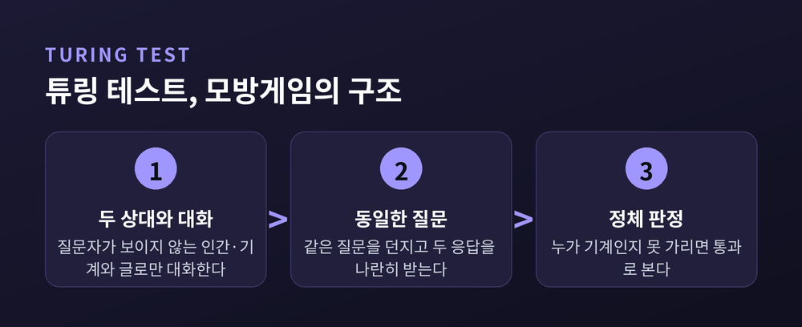
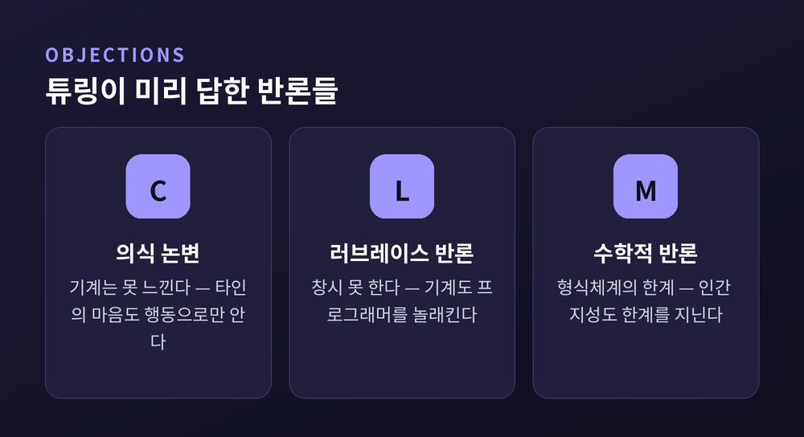
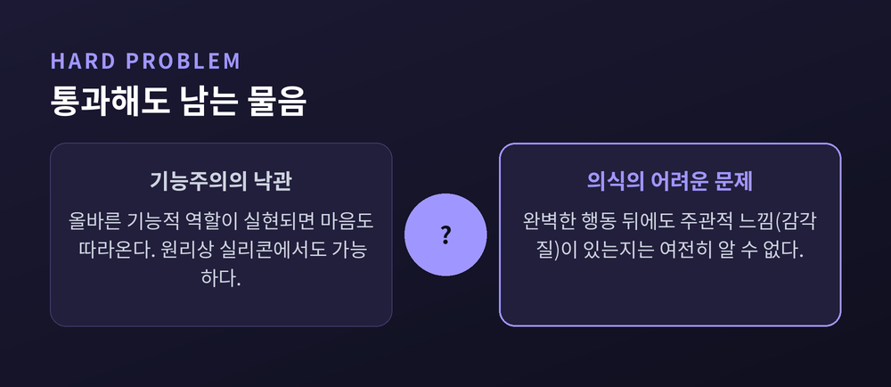
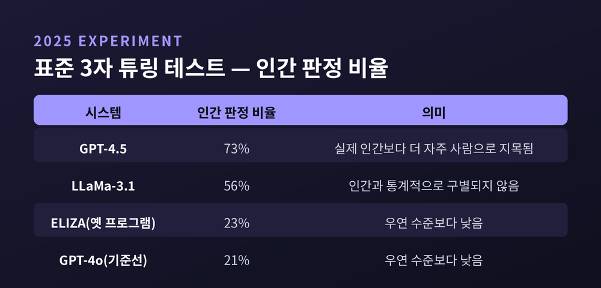

이번 글에서는 "기계는 생각할 수 있는가"라는 오래된 물음을 정리해 보겠습니다. 튜링 테스트에서 출발해, 중국어 방 논변과 의식의 문제를 지나, 오늘날 대규모 언어모델까지 이어지는 논쟁을 따라갑니다. 어느 한쪽 결론을 강요하지 않고, 대립하는 입장을 나란히 놓고 보겠습니다.
앨런 튜링은 1950년 학술지 『Mind』에 논문 한 편을 실었습니다. 제목은 "Computing Machinery and Intelligence"였습니다.
그는 "기계는 생각할 수 있는가"라고 곧바로 묻지 않았습니다. '생각'과 '기계'라는 말의 뜻을 두고 끝없이 다투게 될 것을 알았기 때문입니다.
그래서 질문을 바꿨습니다. "기계가 대화만으로 인간과 구별되지 않을 수 있는가."
이것이 모방게임, 흔히 말하는 튜링 테스트입니다. 질문자 한 사람이 보이지 않는 두 상대와 글로만 대화합니다. 한쪽은 사람, 다른 한쪽은 기계입니다. 질문자가 둘을 안정적으로 가려내지 못하면, 그 기계는 시험을 통과한 것으로 봅니다.
튜링의 선택은 분명했습니다. 속을 들여다보는 대신, 겉으로 드러난 언어 행동을 보기로 한 것입니다.

그는 대담한 예측도 남겼습니다. 50년 뒤인 2000년쯤이면, 평균적인 질문자가 5분 대화한 뒤 기계를 옳게 알아맞힐 확률이 70%를 넘지 못하리라는 것이었습니다.
튜링은 예상되는 반박을 아홉 가지로 정리해 하나씩 응답했습니다. 그 가운데 오늘까지 살아남은 것이 둘 있습니다.
하나는 '의식 논변'입니다. 기계는 기쁨도 아픔도 느끼지 못하니 진짜로 생각하는 것이 아니라는 지적입니다. 튜링의 대답은 서늘했습니다. 우리는 옆 사람이 실제로 무언가를 느끼는지도 그의 행동으로만 짐작할 뿐이라는 것입니다. 사람에게는 행동으로 마음을 인정하면서, 기계에게만 더 엄한 잣대를 대는 것은 공평하지 않다고 보았습니다.
다른 하나는 러브레이스 부인의 반론입니다. "기계는 우리가 시킬 줄 아는 것만 할 뿐, 스스로 무엇도 창시하지 못한다." 튜링은 이렇게 받았습니다. 기계도 프로그래머를 놀라게 할 수 있으며, 그것은 제자의 답안이 스승을 놀라게 하는 일과 다르지 않다고요.

그로부터 30년 뒤, 철학자 존 설이 강력한 반례를 내놓습니다. 1980년의 '중국어 방' 사고실험입니다.
중국어를 한 글자도 모르는 사람이 방 안에 있다고 해봅시다. 그에게는 중국어 기호가 담긴 상자와, "이 기호가 들어오면 저 기호를 내보내라"는 규칙집이 있습니다. 밖에서 중국어 질문이 들어오면, 그는 규칙대로 기호를 짝지어 답을 내보냅니다.
밖에서 보면 완벽한 중국어 대화입니다. 그러나 방 안의 사람은 여전히 아무 뜻도 모릅니다.
설의 결론은 한 문장으로 압축됩니다. "구문은 의미를 낳지 못한다."
기호를 형식적으로 조작하는 일과, 그 기호가 무엇을 뜻하는지 아는 일은 다릅니다. 컴퓨터는 앞엣것만 할 뿐이라는 이야기입니다. 여기서 설은 '강한 인공지능'과 '약한 인공지능'을 갈라놓습니다. 전자는 기계가 문자 그대로 마음을 지닌다고 보고, 후자는 기계를 마음을 연구하는 유용한 도구로만 봅니다. 그의 표적은 강한 인공지능이었습니다.
물론 반론도 만만치 않았습니다. 방 안의 사람은 몰라도 방 전체 시스템은 이해한다는 반론이 있었고, 로봇 몸을 주어 세계와 부딪히게 하면 기호가 실제 사물에 닻을 내린다는 반론도 있었습니다. 설은 그때마다 되받았습니다. 규칙집을 통째로 외워도, 로봇 안에 방을 넣어도, 이해는 여전히 생기지 않는다고요.
논쟁의 뿌리에는 마음을 보는 서로 다른 관점이 있습니다.
예전에는 행동주의가 있었습니다. 마음이란 결국 행동하는 성향일 뿐이라는 입장입니다. 튜링 테스트의 밑바탕과 결이 닿아 있습니다.
지금은 기능주의가 그 자리를 넓혔습니다. 힐러리 퍼트넘이 다듬은 이 관점은, 마음의 재료가 아니라 그것이 맡는 '기능적 역할'에 주목합니다. 통증은 특정한 뇌 조직이 아니라, 입력과 출력 사이에서 통증이 하는 역할로 정의된다는 것입니다.
여기서 중요한 생각이 하나 나옵니다. 복수실현가능성입니다. 같은 마음 상태가 인간의 뇌에서도, 다른 동물에서도, 원리상 실리콘에서도 실현될 수 있다는 논제입니다. 이것이 사실이라면, 기계가 마음을 갖는 일도 원리적으로는 닫혀 있지 않습니다.
다만 균형을 지킬 필요가 있습니다. 퍼트넘 자신도 훗날 이 논증을 기능주의를 비판하는 데 다시 썼습니다. 기능주의 또한 확정된 정설이 아니라, 여전히 다투어지는 입장입니다.
가장 깊은 곳에는 의식의 문제가 있습니다.
토머스 네이글은 1974년에 물었습니다. "박쥐로 산다는 것은 어떤 느낌인가." 박쥐가 초음파로 세계를 지각하는 과정을 신경 단위까지 낱낱이 기술해도, 그 경험이 '어떠한가'는 답해지지 않습니다. 이 주관적 질감을 철학에서는 감각질이라 부릅니다.
데이비드 차머스는 이를 '어려운 문제'라 이름 붙였습니다. 뇌에 대한 완전한 물리적 서술이 주어져도, 그것이 주관적 경험의 완전한 부재와 논리적으로 양립할 수 있다는 것입니다.
여기서 튜링 테스트의 한계가 드러납니다. 테스트는 행동을 봅니다. 그러나 어려운 문제는 말합니다. 행동을 완벽히 통과해도, 그 안에 정말 느낌이 깃들었는지는 여전히 알 수 없다고요.

이 오래된 논쟁이 최근 현실로 성큼 다가왔습니다.
2025년, 캘리포니아대 샌디에이고 연구진은 표준 3자 방식 튜링 테스트를 진행했습니다. 질문자가 인간과 기계와 동시에 대화하는 방식이었습니다. 인간 페르소나를 부여받은 GPT-4.5는 무려 73%의 비율로 '인간'으로 지목되었습니다. 실제 사람보다 더 자주 사람으로 뽑힌 것입니다. LLaMa-3.1은 56%로 인간과 구별되지 않는 수준이었고, 옛 프로그램 ELIZA는 23%에 그쳤습니다.
튜링의 예측은 시점만 늦춰졌을 뿐, 방향은 맞았던 셈입니다.

그러나 통과가 곧 사고의 증명은 아닙니다. 이 결과는 기계의 능력만큼이나 사람 판정자의 취약함도 함께 보여줍니다. '확률적 앵무새'라는 비판도 있습니다. 언어모델은 의미를 이해하지 않고도 통계적으로 그럴듯한 문장을 이어 붙일 뿐이라는 지적입니다. 설의 중국어 방이 21세기 판본으로 되살아난 셈입니다.
예전에는 사고실험 속 이야기였습니다. 지금은 우리 손 안의 챗봇을 두고 같은 물음을 던집니다. "이 대화 상대는 이해하고 있는가, 아니면 이해하는 척하고 있는가."
정리하면 이렇습니다. 튜링 테스트를 통과했다는 것은 '행동의 사실'입니다. 그러나 이해와 의식의 유무는 여전히 열려 있는 '철학의 물음'입니다. 둘은 같은 자리에 있는 것처럼 보여도, 실은 다른 층에 놓여 있습니다.
결국 남는 것은 하나의 물음입니다.
"구별되지 않는 것과 실제로 생각하는 것은, 과연 같은 일인가."
이 물음에 답이 정해졌다고 말하는 사람이 있다면, 저는 조금 더 신중하시길 권합니다. 기계가 우리를 닮아갈수록, 정작 또렷해지는 것은 '생각한다'는 말의 뜻이기 때문입니다.